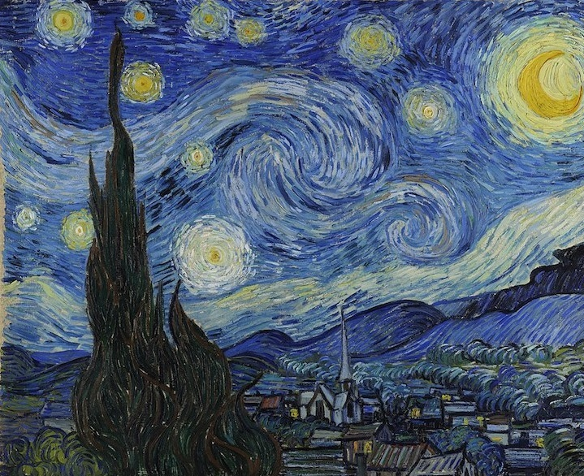
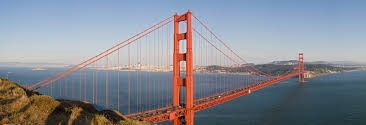

Italy
Home to many of the world's greatest works of art, architecture and gastronomy, Italy elates, inspires and moves like no other.
Renaissance art? The Italian Renaissance marked a period of great cultural change in Europe that took place between the 14th and 16th centuries. A number of painters emerged out of the Italian Renaissance and began to show an interest in the beauty of nature and the human body. Surely you wouldn't want to overlook this.
France, also known as l'hexagon has been a hub of art, architecture, fashion, music, literature and gastronomy that seduces millions of travellers all around the world.France has always been ahead of the game when it comes to art and culture, The architecture of the eiffel tower is astonishing and attracts tourists from all over the world .France is also the home to the Famous louvre mueseum, which displays the famous art of leonardo da vinci,Eugene Delacriox, Raphael and more. A trip to France will certainly keep you entertained.
France
Spain’s pleasant Mediterranean climate, its dramatic coastlines, charming landscapes, rich historical legacy, eclectic culture, culinary expertise and vibrant nightlife have made it a much sought-after destination, and Spain’s international tourist industry is among the largest in the world.If you are thinking about planning a trip to Spain, we can give you interesting ideas of things you can only do here. For example, celebrating the unique Sant Jordi festival or seeing truly special animals such as the Iberian lynx. The oldest cave painting is located in spain and it is worth to see.
Spain
GLOBAL TRAVELS
San Francisco
San Francisco is an eclectic city to visit. Here you’ll find hippies, college students, tech giants, artists, immigrant enclaves, and everything in between.The Golden Gate Bridge, San Francisco known for culture, music, diversity, tech, and picturesque views,The next time you’re hit with the travel bug and wind up in San Francisco—be sure to visit this marvellous destination. Reminiscent of Roman ruins, the grand Palace of Fine Arts was designed by Bernard Maybeck for the purpose of displaying artworks during the Panama-Pacific International Exposition.

Global travels
If you wish to explore any of these astonishing places,
contact us-
123456789
globaltravelstour@gmail.com

London
London: the heart and soul of the UK is a vibrant and eclectic city with plenty to offer every visitor. Historically important and culturally diverse, modern-day London is a hub of famous landmarks, iconic buildings, and innovative attractions on every level.Sitting grandly on the banks of the Thames is Tate Modern. Britain's national museum of modern and contemporary art has a unique design due to the building's previous life as a power station. Inside, you'll find temporary exhibitions by top artists from Damien Hirst to Gauguin and restaurants offering fabulous views across the city.